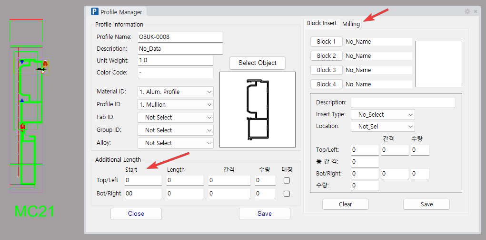
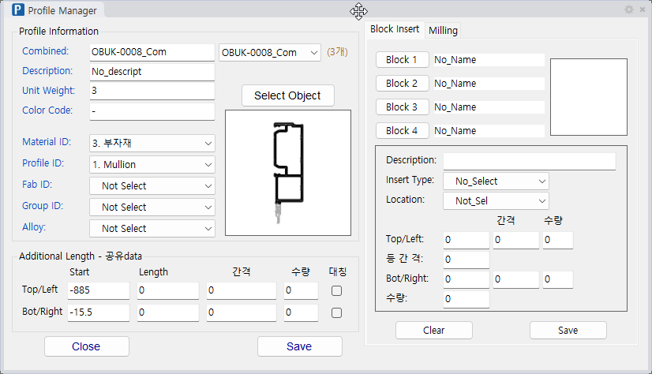
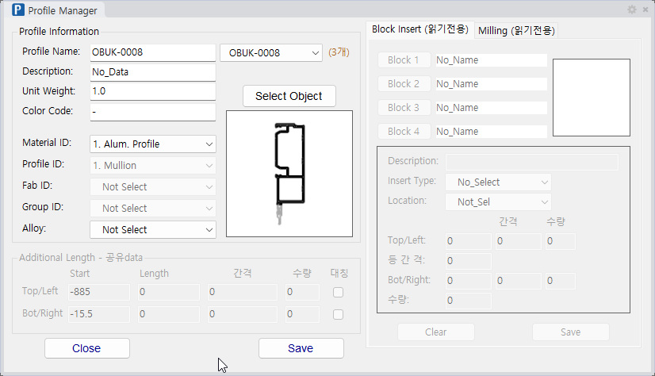

Pname PPI
Pname은 Section Profile에 Surface, Polyline, Block 정보를 입력하는 명령입니다.
프로파일 이름, 단중, 추가 길이, 용도, Block Data를 한 창에서 관리합니다.
Section 요소(Surface·Polyline·Block)에 프로파일 이름·단중·추가 길이·용도·Block Data 등 모델링에 필요한 속성을 한 창에서 입력·수정할 때 사용합니다. 여기서 입력한 값이 Unit 모델링(UMD)과 리스트·도면 작성의 기준 데이터가 되므로, 단면을 만든 직후 반드시 정리해 두는 핵심 단계입니다.
Pname 또는 PPI 명령을 실행합니다.
| 항목 | 설명 |
|---|---|
| Surface Data | Material_ID, Profile_ID, Fab_ID, Additional Length 등을 입력합니다. |
| Polyline Data | Subtracter 종류와 가공 방식을 입력합니다. |
| Block Data | Block 삽입 방식, 기준, 위치, 간격, 수량을 입력합니다. |
| Milling | 프로파일 바를 단면 폴리라인 모양으로 깎습니다. 오른쪽 Milling 탭에서 입력합니다. |
폴리아미드 단열바처럼 ComP 로 묶은 단면을 열면 창이 합성 모드로 열립니다.
이름 칸 오른쪽에 구성원 목록이 생기고 그 옆에 구성원 수가 표시됩니다.
목록의 맨 위가 합성이고, 들여쓴 줄이 구성원입니다.

Combined: 로 바뀌고 라벨들이 파랗게 표시됩니다.
지금 고치는 값이 합성의 것이라는 표시입니다.
Profile Name: 으로 돌아오고,
공용 항목과 Block Insert · Milling 두 탭이 잠깁니다.| 모드 | 고치는 대상 |
|---|---|
| 합성 (목록 맨 위) | 합성 이름 · Description · Unit Weight · Color Code · Material ID · Alloy 그리고 공용 항목 — Profile ID · Fab ID · Group ID · Additional Length 상자 전체 |
| 구성원 (들여쓴 줄) | 그 구성원의 이름 · Description · Unit Weight · Color Code · Material ID · Alloy |
SSP 를 먼저 돌리십시오. 복사본은 원본과 같은 합성 표시를 들고 있어,
Pname 이 합성으로 열지 않고 안내만 표시합니다.묶고 푸는 것은 ComP · XcomP 입니다. 자세한 것은 ComP / XcomP 도움말을 보십시오.
창 아래쪽 Additional Length 상자는 프로파일 바를 중심선보다 얼마나 더 길게 뽑을지, 그리고 그 끝에 조각을 몇 개 놓을지를 정합니다. 줄은 두 개이고 각각 바의 한쪽 끝을 뜻합니다.
| 줄 | 어느 끝인가 |
|---|---|
| Top/Left | Mullion 이면 위쪽 끝, Transom 이면 왼쪽 끝. |
| Bot/Right | Mullion 이면 아래쪽 끝, Transom 이면 오른쪽 끝. |
| 칸 | 설명 |
|---|---|
| Start | 그 끝에서 바깥으로 더 뽑는 길이(mm)입니다. 중심선 끝이 그대로 바 끝이 되지 않고 이 값만큼 밀려납니다. 수식(100+5)도 쓸 수 있습니다. |
| Length | 0 이면 바 하나가 끝에서 끝까지 만들어집니다. 값을 적으면 그 끝에서 Length 길이의 조각만 만듭니다(가운데는 비웁니다). 브래킷·슬리브처럼 끝에만 들어가는 부재에 씁니다. |
| 간격 | 그 조각을 여러 개 놓을 때의 간격(mm)입니다. D100,D200 처럼 콤마로 여러 값을 적으면 더미 기준으로 읽습니다. |
| 수량 | 놓을 개수입니다. 간격과 수량 중 채운 쪽이 나머지를 정합니다. |
| 대칭 | 켜면 반대쪽 끝에서도 같은 간격으로 대칭 배치합니다. |
Mullion·Transom 두 칸이 Start 한 칸이 되었습니다.0. Not Select 이고 Start 가 위아래 모두 0 인 폴리라인 단면에는 기본 추가 길이 50mm 가 적용됩니다.Polyline · PolyCurve · Line 을 선택하면 오른쪽 Block Insert 와 Milling 탭이 회색으로 잠겨 입력할 수 없습니다. 두 탭은 단면 Surface 를 위한 것이라, Curve 에 값을 넣어도 모델링은 아무것도 하지 않습니다.
SSP 를 막습니다.SSP 가 "블록을 못 찾는다"며 진행을 막습니다. 폴리라인은 대개 이름이 서로 같아서, 그 경고만 보고 어느 것이 문제인지 찾기가 매우 어렵습니다.Pname 으로 고른 뒤 창 아래 Save 를 누르면 됩니다. Curve 를 저장할 때 Block 4칸과 Milling 4칸이 자동으로 비워지고, 무엇을 비웠는지 명령창에 표시됩니다. (DBB·SDBB 는 Surface 만 처리하므로 Curve 에는 쓸 수 없습니다.)프로파일 바에 슬롯·홈 같은 절삭을 넣는 기능입니다. 오른쪽 열의 Block Insert 탭 옆 Milling 탭에서 입력하며, 한 프로파일에 Mill 1~Mill 4 네 칸을 쓸 수 있습니다.
UMD 가 바를 그 모양으로 깎습니다.UMD 가 알아서 깎습니다.Mill 1~Mill 4 이름 칸을 누르십시오. 그 폴리라인 가운데에 번호 점이 하나 찍힙니다(한 번에 하나만). Save 하거나 창을 닫으면 저절로 사라집니다.Pname 창의 Milling 탭에서 Mill 1 버튼을 누르고 그 폴리라인을 선택합니다.UMD로 모델링하면 바가 그 모양으로 깎입니다.| 항목 | 설명 |
|---|---|
| Cut Type | 2. Subtract Only — 깎기만 합니다. 3. Subtract & Show — 깎은 뒤 절삭체 사본을 Subtract_Block 레이어에 남겨 위치를 눈으로 확인할 수 있게 합니다. |
| Location | 배열 기준입니다. 1. By Brep — 바 형상의 실제 양 끝. 2. By Line — 중심선의 양 끝. 두 값은 바 끝이 사선으로 잘린 경우 서로 다릅니다. |
| Length | 절삭체 하나의 바 축 방향 길이(mm)입니다. 폴리라인은 단면이라 그 자체로는 길이가 없으므로 이 값만큼 압출합니다. 배열 지점이 이 길이의 가운데가 됩니다. |
| Top/Left | 한쪽 끝의 절삭체를 바 끝에서 바깥으로 얼마나 내밀지(mm). 그 끝은 mullion은 위쪽, transom은 왼쪽입니다. 0이면 바 끝에 딱 맞추고, 음수를 적으면 안쪽으로 당깁니다(-50이면 끝에서 50mm 안쪽). |
| 등 간 격 | 절삭 간격의 상한(mm)입니다. 양 끝에 하나씩 먼저 놓고, 그 사이를 이 값을 넘지 않는 가장 적은 개수로 나눕니다. 그래서 실제 간격은 늘 이 값 이하이고, 딱 나누어떨어지면 이 값 그대로입니다. 자투리는 남지 않습니다. 이 칸을 적으면 아래 수량은 스스로 정해지므로 적지 않아도 됩니다. 0.5 · 1/4 · 1/6 · 1/8 을 적으면 블록과 같이 중앙·대칭 배치라는 뜻으로 읽습니다(0.5는 중앙 1개, 나머지는 대칭 2개). |
| Bot/Right | 반대쪽 끝의 절삭체를 바 끝에서 바깥으로 얼마나 내밀지(mm). 쓰임은 Top/Left와 같고 음수도 같은 뜻입니다. |
| 수량 | 등 간 격을 비우고 이 칸만 적으면 구간을 그 개수로 나눠 간격을 스스로 산출합니다(양 끝 포함). 등 간 격에 값이 있으면 개수는 거기서 정해지므로 이 칸은 보지 않습니다. 즉 둘 중 하나만 적으면 나머지가 따라옵니다. |
| Top/Left 줄의 간격·수량 | 시작 끝에서 따로 세는 그룹입니다. 등 간 격 칸이 비어 있을 때만 씁니다. |
| Bot/Right 줄의 간격·수량 | 반대 끝에서 따로 세는 그룹입니다. 쓰임은 위와 같습니다. |
Length가 0이어도 마찬가지입니다.| 명령어 | 설명 |
|---|---|
Pname | Profile 정보 입력 창을 엽니다. |
PPI | Profile 정보 입력과 같은 용도의 명령입니다. |
ComP · XcomP | 프로파일 여러 개를 하나의 합성 프로파일로 묶고, 다시 풉니다. |
Dtable | 여러 단면의 같은 정보를 표로 모아 한 번에 고칩니다. |